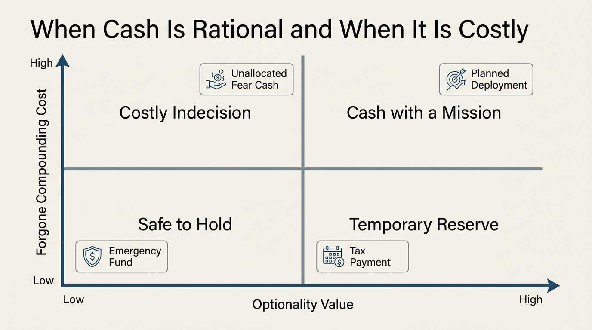

The Opportunity Cost of Cash
Cash feels safe because it does not mark down like a stock, does not lock up like a private fund, and can solve a problem tonight. That flexibility is real. The mistake is to treat flexibility as free. Every dollar held in cash is a dollar not compounding elsewhere, and that forgone compounding becomes expensive once balances move beyond true reserve needs.
The right cash question is therefore not whether cash has a positive nominal yield today. It is whether the balance earns enough, after inflation and tax, to justify the opportunities being declined and the optionality being purchased. For a household with unstable income, upcoming liabilities, or thin reserves, that optionality can be worth a great deal. For a household parking years of deployable capital in idle balances because uncertainty feels uncomfortable, cash can become one of the most expensive assets on the sheet.
Established fact: cash provides liquidity, short-duration safety, and low nominal volatility. Reasoned inference: once reserve needs are met, excess cash should face the same hurdle test as any other allocation because low volatility can conceal substantial long-run wealth drag.

Cash Has A Job, Not A Halo
Households often collapse several distinct functions into one cash bucket. Emergency reserves, tax reserves, near-term spending, dry powder for planned purchases, and uncommitted capital all end up in the same account. That is administratively simple, but analytically sloppy. Some of those dollars need immediacy. Some need only short-duration stability. Some are simply waiting because the owner has not imposed a decision rule.
Once those functions are separated, the opportunity-cost problem becomes clearer. An emergency fund is not failing because it does not match equity returns. It is doing a different job. A home down-payment reserve for the next six months should not be stretched for higher yield if market loss would disrupt the purchase. Unallocated strategic capital is different. If it sits in cash indefinitely, the owner is not preserving flexibility so much as paying for indecision every day.
Why Positive Cash Yields Do Not Eliminate The Cost
When policy rates are high, cash feels newly respectable because money-market funds and Treasury bills generate visible nominal income. That changes the optics, but not the underlying framework. The opportunity cost of cash is always relative. It depends on what else the capital could earn at similar risk, what inflation is doing to future purchasing power, and what optionality premium the cash balance genuinely buys.
Even in a high-rate environment, large idle cash positions can underperform inflation-adjusted long-horizon assets by a wide margin over multi-year windows. They can also fail a tax-adjusted test if the nominal yield is mostly being recycled through taxable interest while real after-tax compounding elsewhere remains stronger. That does not mean cash is wrong. It means the hurdle should be explicit rather than emotional.
| Cash function | Why it is rational | When cost starts to dominate |
|---|---|---|
| Emergency reserve | Buys immediate survival time and avoids forced selling | When reserve size drifts far above realistic stress needs |
| Known near-term liability | Protects capital needed on a fixed timetable | When the timetable becomes vague and the money stays idle by habit |
| Tactical dry powder | Preserves ability to act into dislocation or opportunity | When there is no deployment rule and cash becomes permanent |
| Fear buffer | Reduces anxiety in the short run | Almost immediately, because the balance has no disciplined mandate |
The Hidden Cost Is Lost Optionality Elsewhere
Cash is usually defended as optionality, but that argument has a mirror image. Holding too much cash can destroy other forms of optionality. It can reduce the pace of asset accumulation, delay the point at which a taxable portfolio starts generating meaningful dividends or capital gains, and slow the transition from labor dependence to capital resilience. In that sense, excess cash is not neutral. It can keep a household trapped in an earlier stage of the balance-sheet lifecycle.
This matters most when people compare cash only to risky assets at the worst possible moment. They imagine the regret of buying before a decline, but not the slower, quieter regret of spending five years underinvested while inflation and foregone compounding do their work. The second path feels safer because it lacks visible drawdowns. It is still a real cost.

How To Price Cash Properly
The cleanest approach is to assign cash a required job and a time horizon. Ask what specific risk the balance protects against, how much capital that protection requires, and what probability distribution justifies holding more. If the answer is fuzzy, the balance is likely serving sentiment more than strategy.
After that, compare the balance against the next-best realistic alternative, not an idealized one. A household should not compare emergency reserves to a speculative equity theme. It should compare them to other liquid or near-liquid options with acceptable drawdown and tax characteristics. For uncommitted capital, the benchmark can widen toward diversified risk assets, debt paydown, business reinvestment, or other durable uses.
- Define the reserve floor before discussing excess cash.
- Separate short-dated obligations from indefinite parking balances.
- Use after-tax, after-inflation comparisons rather than nominal yield alone.
- Set a deployment rule so tactical cash does not silently become permanent cash.
Why The Rich Still Hold Large Cash Balances
At higher wealth levels, cash often serves a legitimate coordination role. It supports capital calls, real-estate closings, tax payments after liquidity events, payroll inside closely held businesses, and the ability to move quickly when markets dislocate. The key difference is that these balances usually sit inside a broader capital system. They are not the entire strategy. They are one operational layer of it.
The problem appears when middle-stage households imitate the surface behavior without the underlying structure. A wealthy family office can hold substantial cash because the rest of the balance sheet is already productive and diversified. A still-accumulating household that overweights cash may simply be delaying the compounding base it needs to become resilient.
The Practical Standard
Cash is not good or bad in the abstract. It is expensive or cheap relative to the job it performs. When it prevents forced selling, funds a known obligation, or preserves action under genuine uncertainty, the cost can be justified. When it reflects vague caution, constant market-timing delay, or the desire to avoid short-run discomfort, the cost compounds against the household almost invisibly.
The opportunity cost of cash is therefore a discipline problem before it is a market problem. Once the role of each dollar is defined, cash becomes easier to size and easier to judge. Until then, many households treat one of their most flexible assets as if it requires no allocation standard at all.
Source Frame
This analysis uses stable capital-allocation principles: cash has highest liquidity and lowest nominal volatility, inflation erodes idle purchasing power over time, and foregone compounding is a real wealth cost once reserve needs are satisfied.
What remains context-dependent is the correct reserve size. That varies with income stability, liability timing, leverage, business exposure, and the depth of other liquid assets already available to the household.